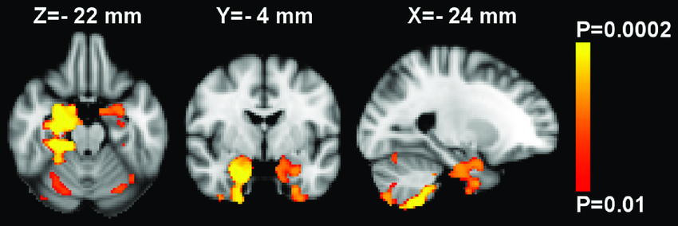
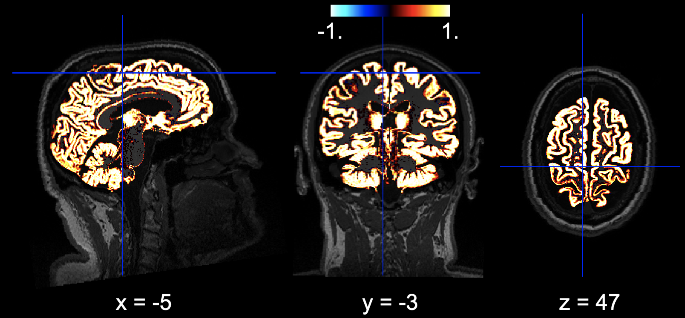
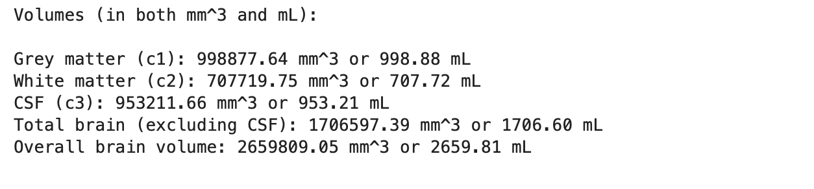
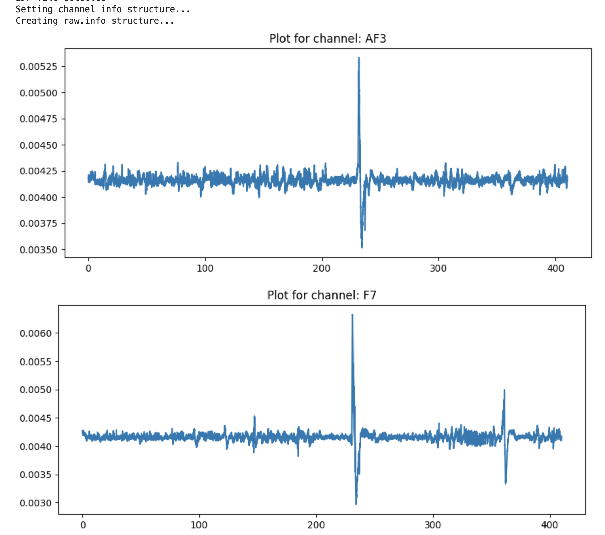

EEG Source Localization

The EEG Source Localization pipeline demonstrates the workflow for preprocessing, epoching, co-registration, and source reconstruction using EEG data. This GIF provides a quick overview of source localization and visualization in 3D, showcasing the quality of co-registration and correct fiducial alignment.
Voxel-Based Morphometry with Enigma Toolbox
Checkout the Voxel-Based Morphometry with Enigma Toolbox Code on GitHub:
View the GitHub RepositoryBrain Volume Analysis and Visualisation
 Checkout the Brain Volume analysis on T1w images on GitHub:
View the GitHub RepositoryNeuroimaging Data Processing & Analysis Scripts
Below are some of my neuroimaging data processing & analysis scripts:
EEG Data Processing with MNE
Checkout the EEG Data Processing with MNE toolbox Code on GitHub:
View the GitHub Repository